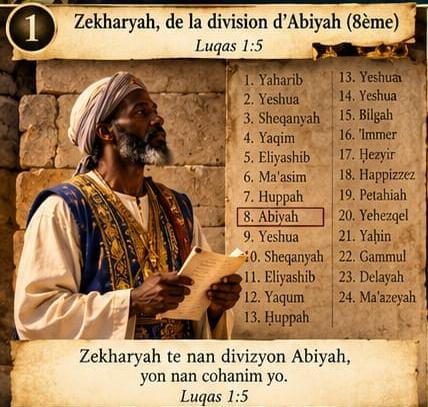
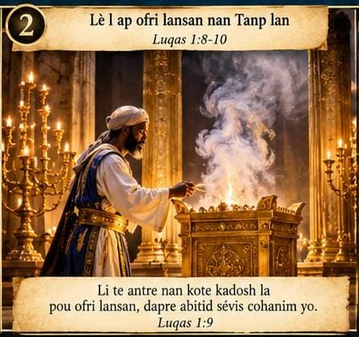
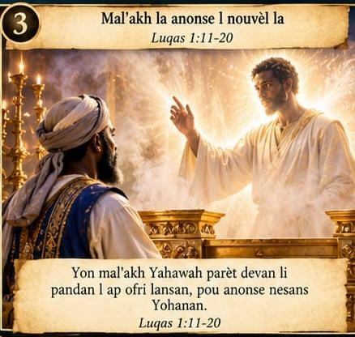
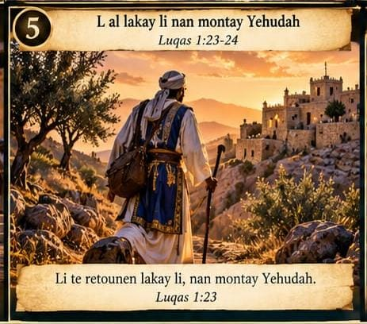
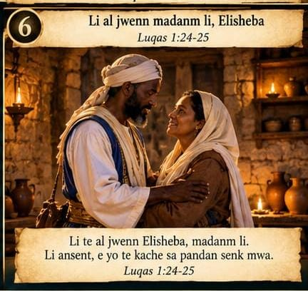
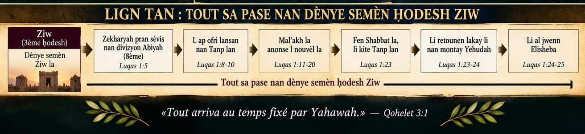
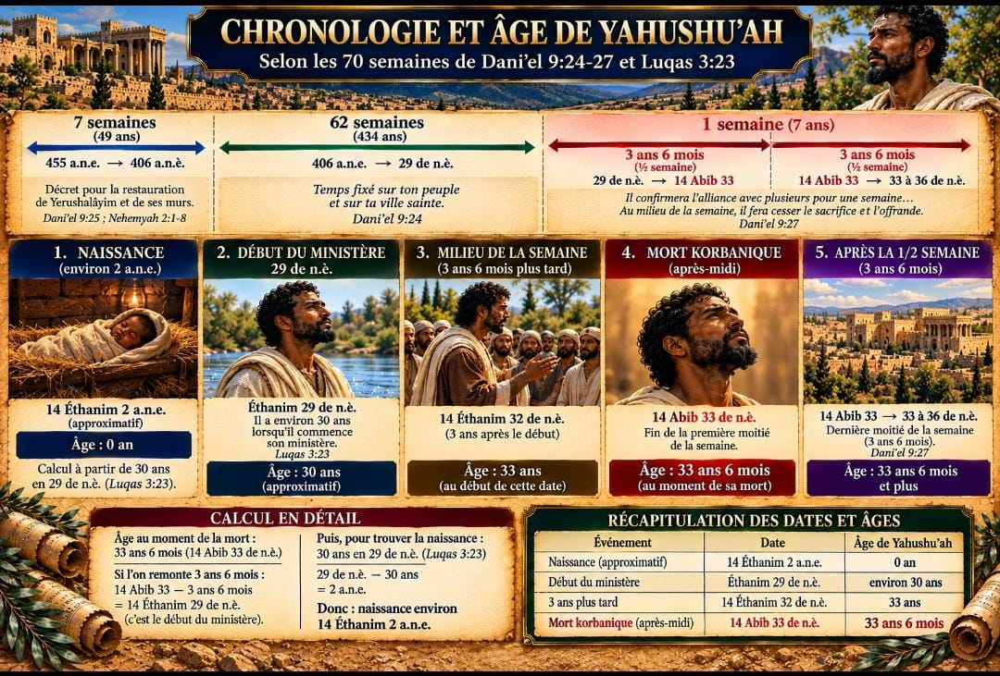

IL EST NÉ UN MOSHIAḤ
Yahushuʿah Ha'Mashiaḥ — le Melekh promis · Shabbat 14 Éthanim
🎶 YON MOSHIAḤ FÈT!
Yahushuʿah Ha'Mashiaḥ — Melekh pwomès la
Louqas 2:10-11 · Yaḥuānān 1:14; 3:16 · Yeshaʿeyah 9:6-7 · Louqas 1:31-33
Intro — dousman, solanèl
Yon vwa:Nou pa bézwen pè… Paské gen yon bòn nouvèl, Yon nouvèl kap poté gwo kè kontan Pou tout pèp la: Jodi a… yon Moshiakḥ fèt.
Asanble, dousman:Yahushuʿah Ha'Mashiakḥ…
Couplet 1
Éthanim té wè yon bèl jou, Yon timoun té antré nan monn nan; Mal'akh la poté bòn nouvèl la, Yon nouvèl pou fè kè pèp la kontan. Yon Pitit Gason té fèt, Yo té ban nou yon timoun ; Dominasyon an va sou zèpòl Li, Malkuwt Li a pap janm fini. Yahawah sonjé pwomès Li, Dabar Li a pa t tonbé atè; Moshiakḥ Li té pwomèt la vini: Yahushuʿah, Mélèkh nou an!
Refren
YON MOSHIAKḤ FÈT! YON MÉLÈKH VINI! YAHUSHUʿAH HA'MASHIAḤ! Se yon nouvèl kè kontan Pou tout pèp la! YON PITIT GASON FÈT! YO BAN NOU YON TIMOUN! Yahawah montré lanmou Li, Li ban nou Moshiakḥ La ! HallélouYah! HallélouYah! Mélèkh la vini!
Couplet 2
Dabar la té vin chè, Li tabli tant Li nan mitan nou; Yahawah, atravè Pitit Gason Li, Te vin rété nan mitan lèzòm. Tankou Soukkoth poté lajwa, Lè pèp la rété dévan Yahawah, Jou sa a poté gwo kè kontan: Moshiakḥ la nan mitan nou! Yahawah tèlman renmen limanité, Li ban nou Pitit Gason Li a, Pou tout moun ki egzèse émounah nan Li Ka jwenn lavi ki pap janm fini an.
Refren
YON MOSHIAḤ FÈT! YON MÉLÈKH VINI! YAHUSHUʿAH HA'MASHIAḤ! Sé yon nouvèl kè kontan Pou tout pèp la! YON PITIT GASON FÈT! YO BAN NOU YON TIMOUN! Yahawah montré lanmou Li, Li ban nou Moshiakḥ La! HallélouYah! HallélouYah! Mélèkh la vini!
Pont — call and response
Dirijan:Kisa mal'akh la té anonsé?
Asanble:YON BÒN NOUVÈL!
Dirijan:Pou kiyès nouvèl sa a yé?
Asanble:POU TOUT PÈP LA!
Dirijan:Kiyès ki fèt?
Asanble:YON MOSHIAḤ!
Dirijan:Ki non Li?
Asanble:YAHUSHUʿAH!
Dirijan:Kiyès Li yé?
Tout asanble a:YAHUSHUʿAH HA'MASHIAKḤ! MÉLÈKH PWOMÈS LA!
Montée
Yon Pitit Gason fèt! HallélouYah! Yo ban nou yon timoun! HallélouYah! Dominasyon an sou zèpòl Li! HallélouYah! Malkuwt Li a pap janm fini! HallélouYah! Yahawah té pwomèt Li… É LI VINI!
Gran refren final
YON MOSHIAKḤ FÈT! YON GRAN MÉLÈKH VINI! YAHUSHUʿAH! YAHUSHUʿAH! YAHUSHUʿAH HA'MASHIAKḤ! Éthanim poté bon nouvèl la, Yon nouvèl pou fè tout pèp kontan! Yahawah montré lanmou Li, Li ban nou Pitit Gason Li a ! Yon Pitit Gason fèt! Yo ban nou yon timoun! Dominasyon an sou zèpòl Li, Malkuwt Li a pap janm fini! Mélèkh la vini! Moshiakḥ la vini!
Tout pèp la, lévé vwa nou:HALLÉLOUYAH! YAHUSHUʿAH HA'MASHIAKḤ! MÉLÈKH PWOMÈS LA!
Outro — majestueux, dousman
Éthanim… Ḥodèsh ki poté mémwa Yon nouvèl kè kontan… Yon Moshiaḥ fèt. Yahawah ban nou Pitit Gason Li. Yahushuʿah Ha'Mashiakḥ… Mélèkh la. HallélouYah.
🎶 ENTRONS DANS LE REPOS D'ÈLOHIM
Ibriyim 4:1-11
Intro — ritm lan ap monte dousman
Pwomès la toujou la… Pòt la toujou louvri… Gain yon répo Pou pèp 'Èlohim lan!
Dirijan:Èske nou paré?
Asanble:N ap antré!
Dirijan:Ki koté?
Asanble:Nan répo 'Èlohim!
Couplet 1
Dépi travay Li té fin fèt, 'Èlohim té antré nan repo Li; Setyèm jou a poté temwayaj la, Dessein Li té déja établi. Bon nouvèl la rivé jwenn nou, Men ann résévwa l ak émounah; Pa kité kè nou vin di, Lè nou tandé vwa Yahawah.
Pré-refrain
Jodi a, si nou tandé vwa Li, Pa fè kè nou vin di! Pwomès la toujou rété: Gen yon répo pou pèp Li!
REFREN
ANN ANTRÉ! ANN ANTRÉ! NAN RÉPO 'ÈLOHIM! Pwomès la toujou la, Répo a toujou la! ANN ANTRÉ! ANN ANTRÉ! NAN RÉPO 'ÈLOHIM! Avèk émounah, Avèk obéyisans, Ann fè tout éfò Pou nou antré ladan l! HallelouYah! HallelouYah! Gen yon repo Pou pèp 'Èlohim nan!
Couplet 2
Yahoshua té mennen pèp la Nan péyi yo té pwomèt la; Men si sa té répo final la, Yo pa t ap palé de yon lòt jou ankò. Se poutèt sa pwomès la rété, Gain yon répo k ap tann pèp Li; Moun ki antré nan répo 'Èlohim Répozé anba travay pa li, Menm jan 'Èlohim té répozé Apré travay Li té fin fèt. Wi, pwomès la toujou la!
Pont — Call & Response
Dirijan:Èské pwomès la toujou rété?
Asanble:WI, LI RÉTÉ!
Dirijan:Èské gain yon répo pou pèp 'Èlohim?
Asanble:WI, GAIN YON RÉPO!
Dirijan:Lè nou tandé vwa Li?
Asanble:NOU PAP FÈ KÈ NOU DI!
Dirijan:Kisa nou pral fè?
Tout asanble a:N AP ANTRÉ NAN RÉPO 'ÈLOHIM!
Montée
Pa rété déyò! ANN ANTRÉ! Pa rétounen dèyè! ANN ANTRÉ! Kenbé émounah! ANN ANTRÉ! Maché nan obéyisans! ANN ANTRÉ! Paske... GAiN YON RÉPO POU PÈP 'ÈLOHIM LAN!
GRAN REFREN FINAL
ANN ANTRÉ! ANN ANTRÉ! NAN RÉPO 'ÈLOHIM! Pwomès la pa disparèt! Dabar Li toujou kanpé! ANN ANTRÉ! ANN ANTRÉ! NAN RÉPO 'ÈLOHIM! Jodi a, lè nou tandé vwa Li, Nou pap fè kè nou vin di! Avèk émounah! Avèk obéyisans! ANN FÈ TOUT ÉFÒ POU NOU ANTRÉ LADAN L! Gain yon répo! Pou pèp 'Èlohim lan! Gain yon repo! Pou pèp 'Èlohim lan! ENTRONS DANS LE REPOS D'ÈLOHIM! HallelouYah! HallelouYah! ANN ANTRÉ NAN RÉPO LI!
Outro — asanble a a cappella
Pwomès la toujou rété … Gain yon répo Pou pèp 'Èlohim lan. Jodi a, si nou tandé vwa Li… Nou pap fè kè nou vin di. Ann fè tout efò… Pou nou antré nan répo 'Èlohim. HallelouYah.








1/19 — Propos d'ouverture du président
Peze ▶ pou kòmanse pwogram nan